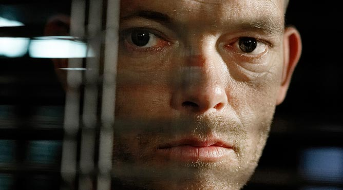
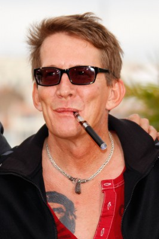
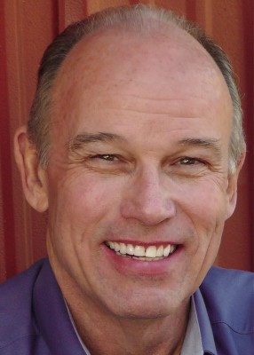
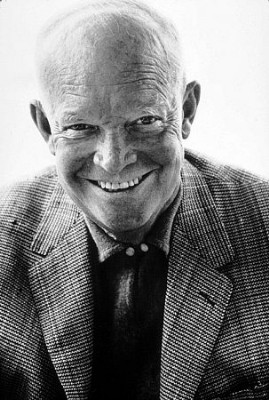

#2478 Idealisten
Alternativ: Idealisten

 IMDB-Wertung: 7.0 / 10
IMDB-Wertung: 7.0 / 10  Metascore: 0
Metascore: 0 
Im Januar 1968 stürzt ein amerikanischer B52-Bomber über dänischem Hoheitsgebiet im grönländischen Thule nahe eines US-Luftwaffenstützpunktes ab und wird kurz darauf als Atomunfall deklariert. Die Verantwortlichen beteuern, die Situation unter Kontrolle zu haben. Nach den acht Monate andauernden und aufwendigen Aufräumarbeiten sind das Flugzeugwrack sowie das mit Plutonium kontaminierte Gletschereis beseitigt und der Fall wird zu den Akten gelegt. Erst dem Journalisten Poul Brink fallen 18 Jahre danach Ungereimtheiten auf. Unter der Eiskappe in Grönland und in den Archiven der US-Regierung scheint die bittere Wahrheit über den Absturz zu liegen. Also beginnt der ehrgeizige Reporter mit der Recherche und zieht dabei allzu bald die Aufmerksamkeit der Verantwortlichen des Unfalls auf sich – und die sehen seine ersten erfolgreichen Enthüllungen gar nicht gern...
Jahr: 2015
Dauer: 114 Minuten
FSK:
Land: Dänemark Studio: SFDTonspuren:
Untertitel: Deutsch,
Auflösung: 1080p (1920x1080) Größe: 8079 MB
Genre: Thriller
Regisseur: Christina Rosendahl
Drehbuch: Lars Kristian Andersen, Simon Pasternak, Christina Rosendahl, Birgitte Stærmose
Soundtrack: Jonas Struck
Darsteller:
-  Søren Malling als Marius Schmidt
-  Thomas Bo Larsen als Carl Dinesen
 Arly Jover als Estibaliz
Arly Jover als Estibaliz Tim Ahern als Ambassador
Tim Ahern als Ambassador- Jens Albinus als Blicher
- Henrik Birch als Ole Damgaard
- Claus Bue als Per Strandgaard Jensen
 Hans Henrik Clemensen als Niels Helveg Petersen
Hans Henrik Clemensen als Niels Helveg Petersen- Nikki Donley als Librarian
-  Larry Jack Dotson als Sheriff Grimes
 Ole Dupont als Thulearbejder
Ole Dupont als Thulearbejder- Paul Kelleher als Fred Powell, Pilot
- Tammi Øst als Søndergaard, Secretary
-  Dwight D. Eisenhower als Himself , archive footage, uncredited
- Rasmus Elton als Journalist , uncredited
- Peter Plaugborg als Poul Brink
- Barbara Barnes als Kate Powell
- Nikolaj Cederholm als Pontoppidan - doctor
- Peter Oliver Hansen als Uffe Ellemann-Jensen
- Jesper Hyldegaard als Lars Krogsgård
- Peer Kaae als Journalist
- Filippa Suenson als Eva - journalist
- Michael Gade Thomsen als Journalist
- Mikkel Vadsholt als Orla Høst
- Jens Otto Krag als Himself , archive footage, uncredited
Datei: X:\2015(G-M)\Idealisten (2015, FSK, 1920x1080).mkv seit 12.11.2015
Festplatte: HD 2015(A-Z)
 Es gibt insgesamt 129 Filme in der Gruppe '2015(G-M)'
Es gibt insgesamt 129 Filme in der Gruppe '2015(G-M)'